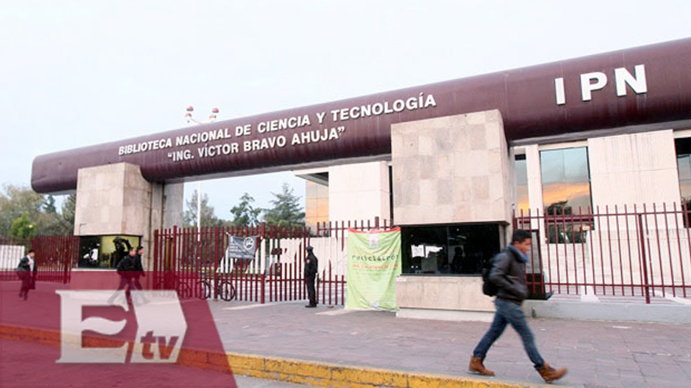

Biblioteca Nacional de Ciencia y Tecnología Ing. Victor Bravo Ahuja

Al entrar encontraras que en su amplio vestíbulo se conjugan arte y ciencia. Con los magníficos cuadros del pintor hidrocálido Saturnino Herrán "Los Saturninos",
el "Muro de Honor" con los politécnicos que han obtenido el Premio Nacional de Ciencias y Artes, el famoso "Péndulo
de Foucault", que nos muestra el movimiento de nuestro planeta al igual que la escultura "Mujer" del autor Alfredo Zalce
y que por supuesto, desde su exterior se encuentra un cristalino espejo de agua en tono jade la escultura "La Juventud" del
Mtro. Francisco Zuñiga, que se erigen a un costado del edificio y que en la actualidad "Los Jóvenes" continúan de manera virtuosa,
quienes han sido fuente de inspiración y la motivación sustancial que originó la fundación del IPN, para poner el arte
y "La Técnica al Servicio de la Patria".